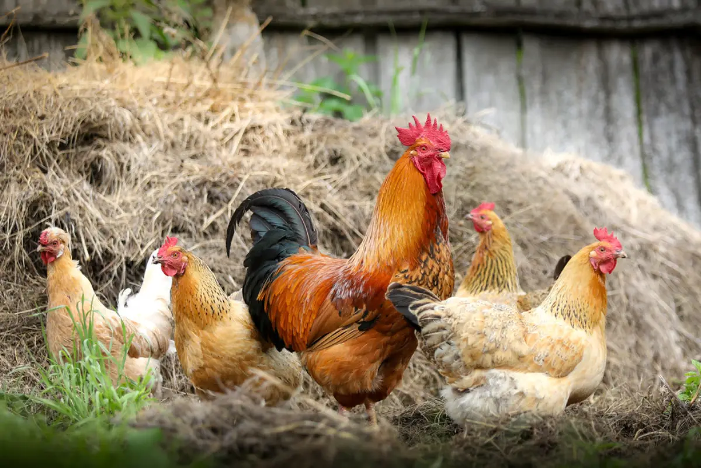

Guide · Ekonomi
Vad kostar det egentligen att ha höns?

Guide · Ekonomi

Kostnadsanalys för fyra höns i trädgården. Priser uppdaterade 2026.
För en flock på 4 höns i Sverige 2026:
Ett hönshus för 4 höns kostar mellan 3 000 kr (budget, självbygg) och 15 000 kr (premium, färdigbyggt). De flesta nybörjare landar runt 5 000–8 000 kr.
Priset per höna beror på ras och ålder:
För 4 höns: räkna med 800–2 000 kr.
Totalt utrustning: 2 000–7 000 kr.
Du måste registrera dig som djurhållare hos Jordbruksverket. Detta är gratis. Vissa kommuner kräver bygglov för hönshus över en viss storlek — kolla med din kommun.
| Kategori | Budget | Medel | Premium |
|---|---|---|---|
| Hönshus | 2 500 kr | 6 000 kr | 14 000 kr |
| 4 höns | 800 kr | 1 400 kr | 2 500 kr |
| Lucköppnare | 550 kr | 1 800 kr | 2 490 kr |
| Övrig utrustning | 1 500 kr | 3 000 kr | 5 500 kr |
| Foder första året | 2 400 kr | 2 800 kr | 3 500 kr |
| Summa | ~7 750 kr | ~15 000 kr | ~28 000 kr |
En höna äter cirka 120-150 g foder per dag. För 4 höns blir det ungefär 180–220 kg foder per år. Ekologiskt värpfoder kostar 12–18 kr/kg — konventionellt 8–12 kr/kg.
Kutterspån eller hackad halm, byts varje vecka. Kostnad: 400–600 kr/år.
Sällan behövs veterinär men räkna med en buffer på 500–1 000 kr/år för kalcium, vitaminer, parasitbehandling etc. Större problem kan kosta mer — vissa väljer att inte veterinärbehandla höns på grund av kostnaden vs djurvärdet.
Frostfri vattenautomat drar ca 20-40W under vintern. Total årskostnad: 100–200 kr.
Fyra höns lägger cirka 900–1 100 ägg per år (beroende på ras och ålder). Det ger:
Jämfört med ekologiska ägg i butik (3,5–5 kr/st) — du går ungefär break-even. Den verkliga "vinsten" är kvaliteten, upplevelsen och att du vet exakt var äggen kommer från.
Nej, inte om du räknar i kronor. Det är break-even i bästa fall. Höns är en livsstilsinvestering, inte en ekonomisk sådan. Däremot får du bättre ägg, en roligare trädgård och en meningsfull sysselsättning.
Grundutrustningen är densamma som för 4 höns (hönshus, lucka, stängsel). Du sparar bara på djurinköp och foder — ca 1 500–2 000 kr/år lägre löpande kostnad. Tips: skaffa hellre 3-4 från början, höns mår dåligt ensamma eller i par.
Begagnat hönshus från Blocket (2 000–4 000 kr), budget-lucköppnare från VEVOR (550 kr), 3-4 värphybrider (600-900 kr), enkel utrustning från Granngården eller Biltema. Kan komma igång för under 5 000 kr.
Hönshuset om du köper färdigt. En Omlet Eglu Cube kostar 12 000–18 000 kr. Men det är också det som håller längst — 10-15 år om det är väl underhållet.
I teorin ja, om du jämför med ekologiska butiksköpta ägg. I praktiken tar det 3-5 år innan du är i break-even på engångsinvesteringen. Efter det blir varje ägg "gratis" jämfört med butik.
Redo att komma igång? Läs vår nybörjarguide eller kolla bästa automatiska lucköppnaren.